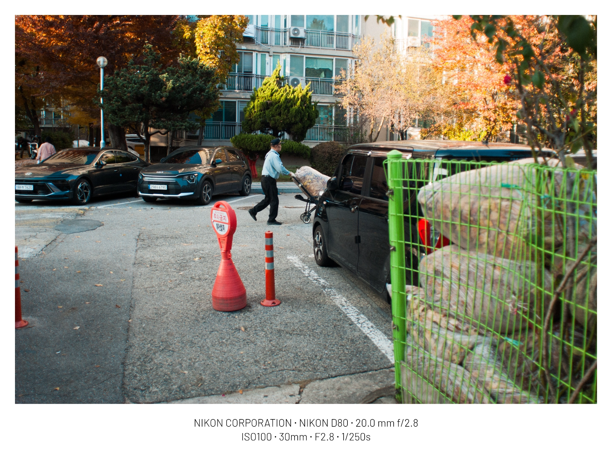
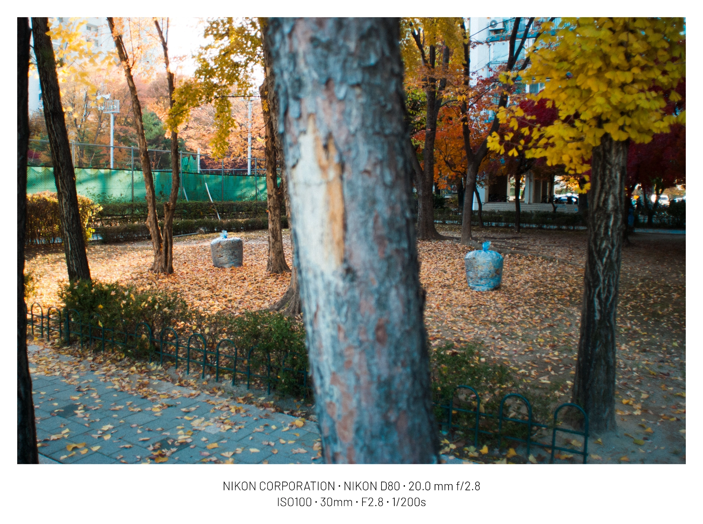
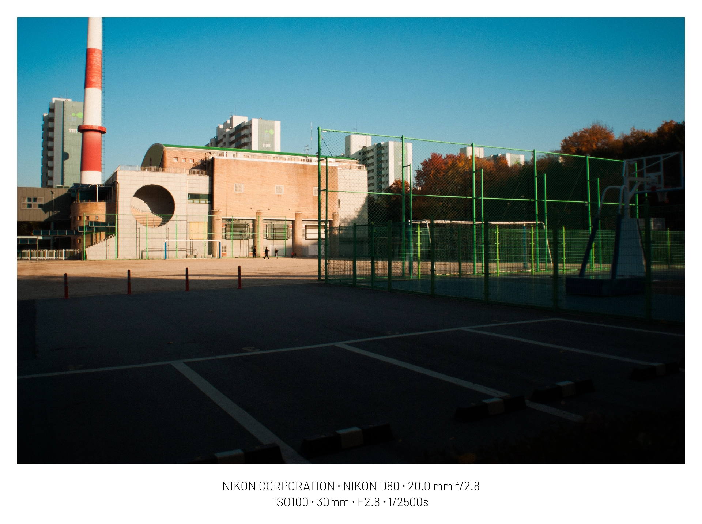
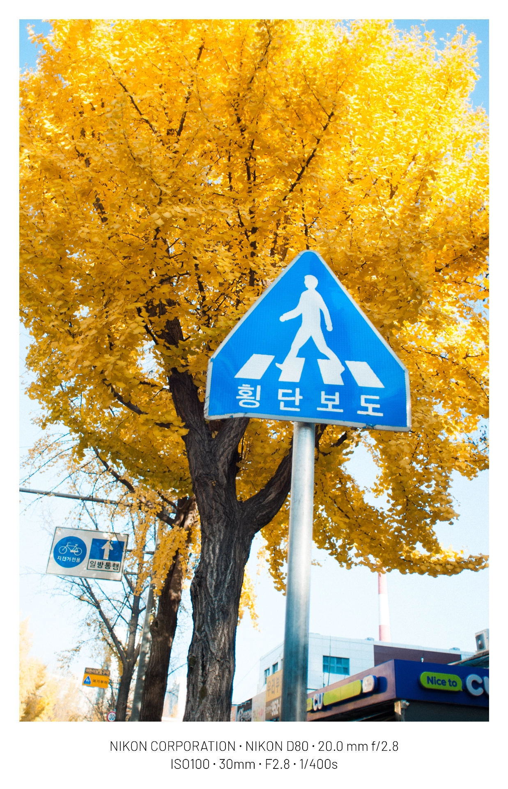
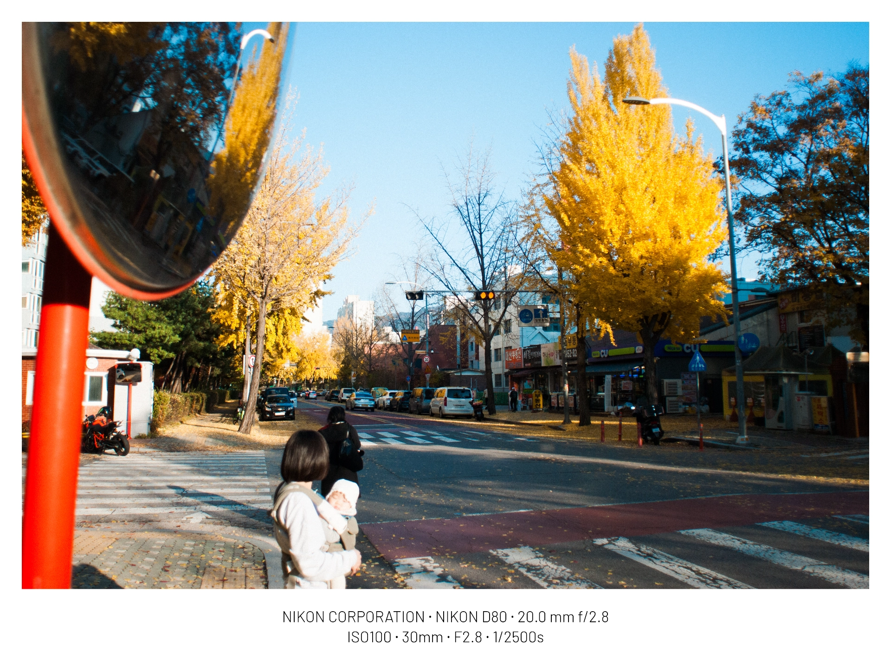
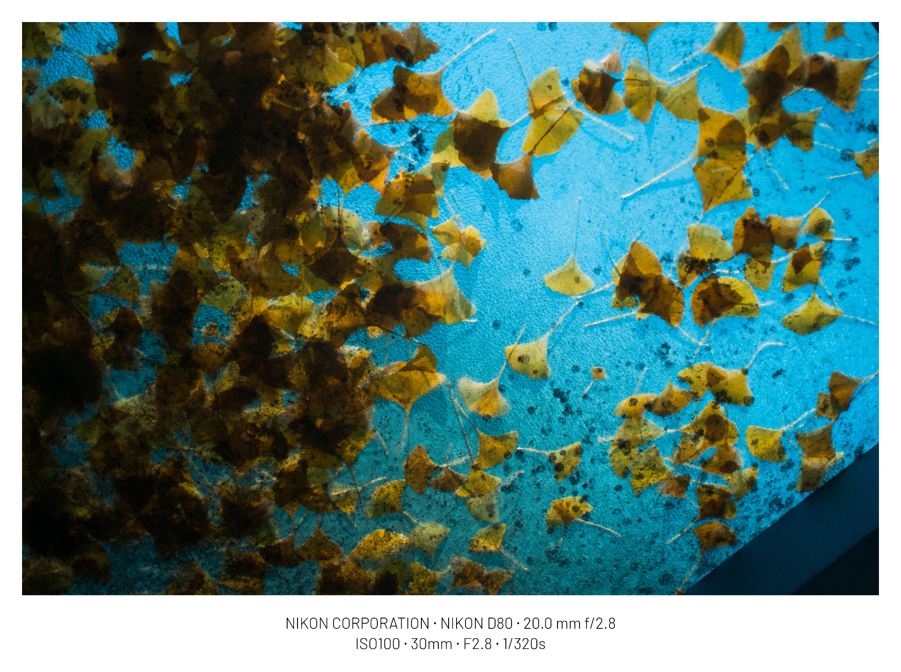
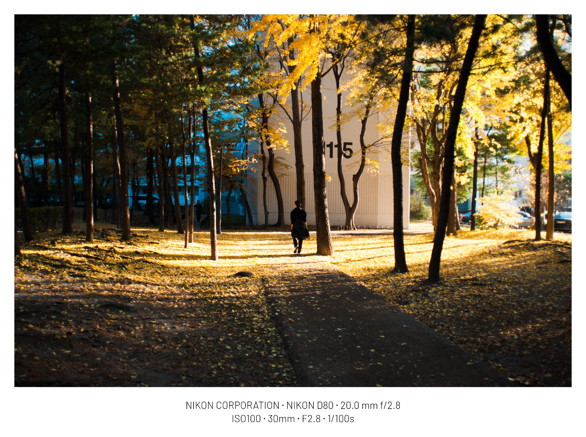
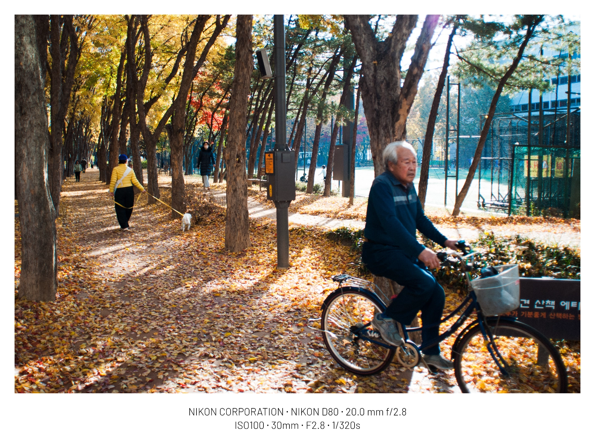
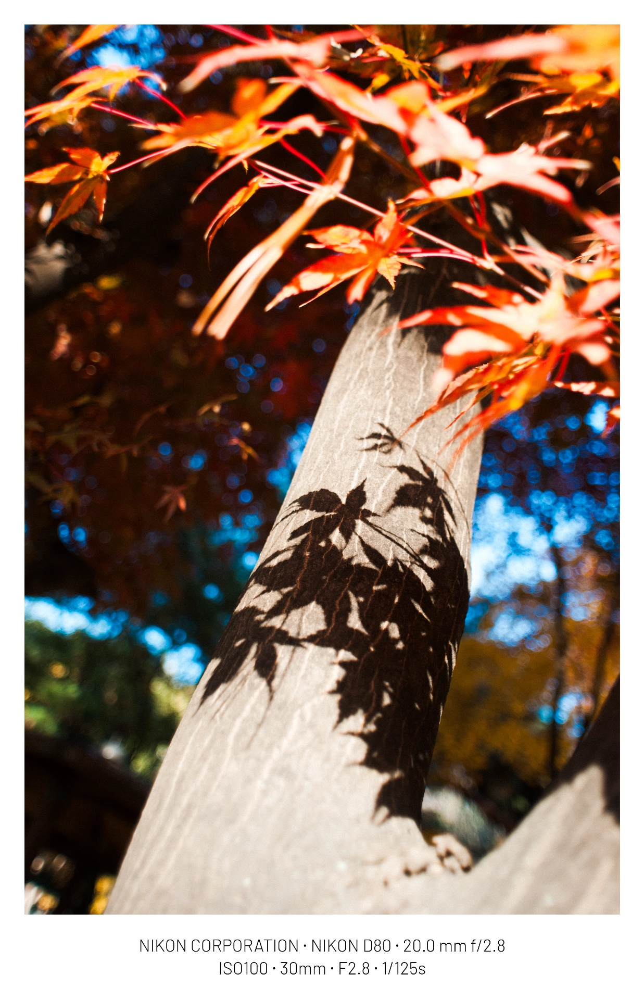

- dc official App









댓글
수집 당시 댓글 12개
케냐AA워시드 · 11.15 21:22:52
KITSUNE · 11.15 21:24:02
· 가재는 · 11.15 21:39:22
아조씨 · 11.15 21:25:07
오이시
· 가재는 · 11.15 21:39:38
갯것 · 11.15 21:27:08
디붕이1 · 11.15 21:29:26
· 가재는 · 11.15 21:39:46
디붕이2 · 11.15 21:39:47
· 가재는 · 11.15 21:39:56
ㅇㅇ · 11.18 08:45:44
ㅇㅇ · 11.18 15:58:25